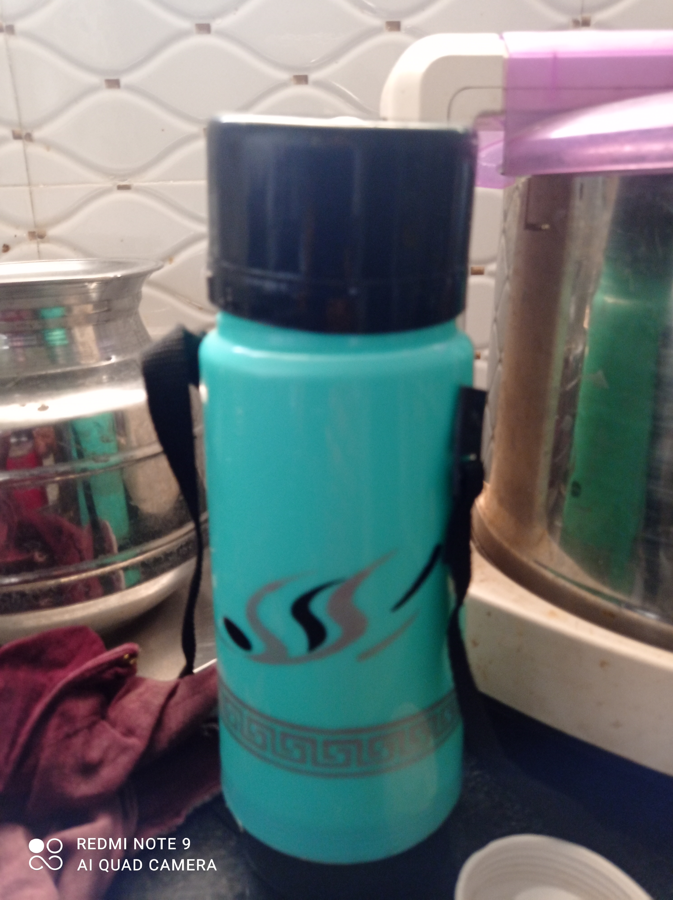
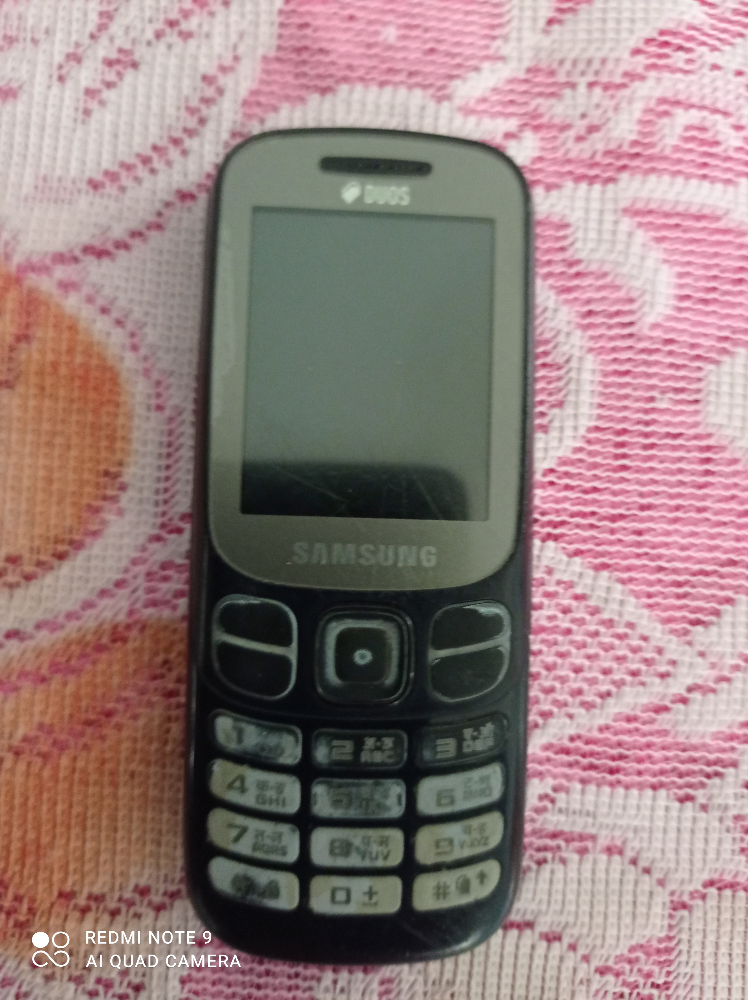

CASE STUDY
TEST IMAGE -
OUTPUT ON MICROSOFT-AZURE:
bear
OUTPUT ON MOBILE-NET:
teddy bear
RESULT
MOBILE NET is more accurate
TEST IMAGE -

OUTPUT ON MICROSOFT-AZURE:
bottle
OUTPUT ON MOBILE-NET:
water bottle
RESULT
MOBILE NET is more accurate
TEST IMAGE -

OUTPUT ON MICROSOFT-AZURE:
cell phone
OUTPUT ON MOBILE-NET:
phone
RESULT
MICROSOFT-AZURE is more accurate